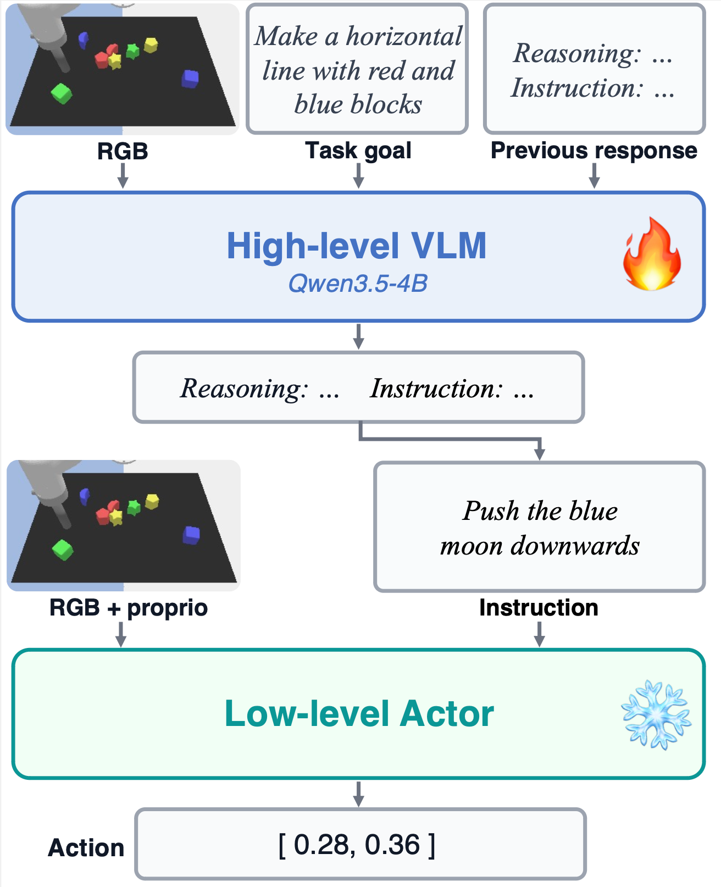
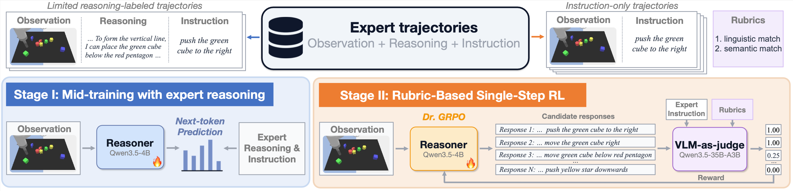
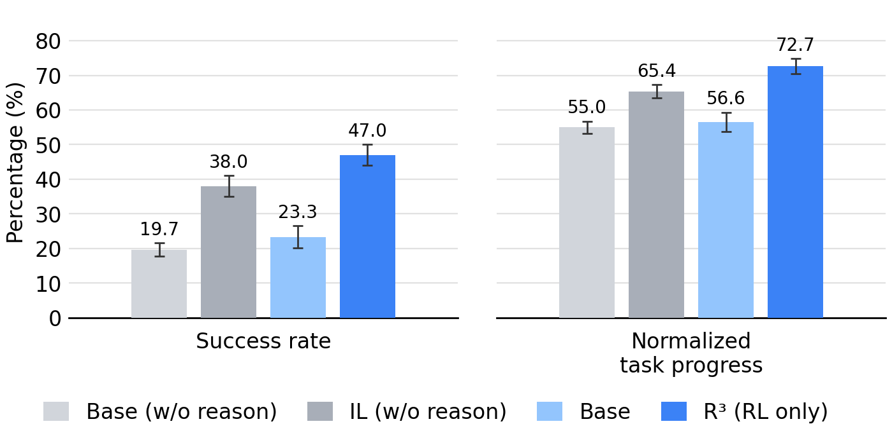

TL;DR
R³ trains VLM reasoners with single-step rubric-based RL to reason in natural language to guide low-level policies on long-horizon manipulation tasks. Instantiated on Language Table and simulated bimanual grocery packing tasks, R³ improves generalization on unseen tasks and significantly outperforms instruction-only imitation learning.
R³: Robotic Reasoners via Reinforcement Learning
Hierarchical Policy for Long-Horizon Manipulation
A high-level VLM takes a scene, goal, and previous response as input, then reasons in language and issues a short-horizon instruction; a frozen language-conditioned low-level policy executes it.

Two-stage Training Framework of R³
R³ mid-trains on limited reasoning traces, then improves the reasoner with single-step RL on instruction-only offline data. The recipe is shared; the expert, history, and reward are domain-specific.
Stage I: Mid-training
Supervised fine-tuning (SFT) on expert reasoning traces teaches the VLM to reason over scene and history before acting. We skip this stage on packing, where the base VLM already reasons usefully.
Stage II: Single-step RL
Single-step RL (Dr.GRPO) on expert instructions, without reasoning supervision or multi-turn rollouts. Language Table uses a rubric-based VLM judge (semantic match). Packing uses exact string match over a finite pack / remove / transfer set.

Main Results
Language Table
We evaluate R³ on 14 long-horizon block-arrangement tasks in Language Table that test relational transfer, compositional generalization, and geometric difficulty. Gemini 3 Flash provides expert reasoning that steers a pretrained language-conditioned policy.
- RL alone improves performance. Rubric-based RL can reinforce useful reasoning behaviors and improve task performance even without mid-training.
- Mid-training improves RL post-training. Mid-training is a strong warm start; a modest amount of reasoning data is enough, especially for OOD generalization.
- R³ enables better OOD generalization than instruction-only imitation. R³ matches or beats instruction-only imitation on seen tasks, and significantly outperforms it on every held-out OOD task.


Grocery Packing
We evaluate R³ on simulated grocery packing tasks, where two 7-DoF xArm-7s pack YCB objects into 3 trays. Humans provide instruction-only demonstrations via teleoperation, and we fine-tune π0.5 as the low-level policy.
On 12 held-out bimanual packing goals, R³ (RL only) reaches higher success and progress than instruction-only imitation (47.0% vs. 38.0% mean success), and mid-training can be skipped because the base VLM already produces useful packing reasoning.

Analysis
Inference-Time Reasoning Matters Beyond Representation Learning
Takeaway: Explicit inference-time reasoning improves generalization beyond what is achieved by using reasoning only as a training-time supervision signal.
- Evidence A: R³ improves both static perception and action understanding, as shown by VQA results, but these improvements alone do not explain its manipulation gains.
- Evidence B: R³ generalizes better than non-reasoning policies that use reasoning as additional training-time supervision (by pre-training or co-training on reasoning traces).
- Evidence C: Increasing the inference-time reasoning budget causally improves success rates.

Understanding Reasoning Behaviors Learned by R³
- R³ learns reasoning strategies that are useful for long-horizon manipulation: comparing alternatives, self-correction, and resolving visual or historical uncertainty.


- Mid-training largely aligns the model’s instruction distribution with the expert’s, providing a strong behavioral prior before RL. With mid-training as a warm start, RL refines an already reasonable behavior distribution rather than rediscovering behaviors from scratch.

Comparison with Embodied Chain-of-Thought (ECoT)
We adapt ECoT to our hierarchical setting by augmenting the response with explicit simulator-state annotations. Our results show that adding ECoT-style structured state annotations generally does not help over free-form language reasoning in our setting. Long-horizon progress tracking, recovery, and closed-loop replanning matter more here than making low-level visual grounding explicit.

Examples of Evaluation Rollouts
Here we show evaluation rollouts of our model on 14 Language Table tasks and 12 unseen grocery packing goals.
Language Table
Grocery Packing
BibTeX
@misc{wu2026r3roboticreasoners,
title={R³: Training Robots to Reason in Natural Language via Reinforcement Learning},
author={Lehong Wu and Yuxiao Qu and Zheyuan Hu and Ivan Zhang and Limin Wei and Zackory Erickson and Aviral Kumar},
year={2026},
}